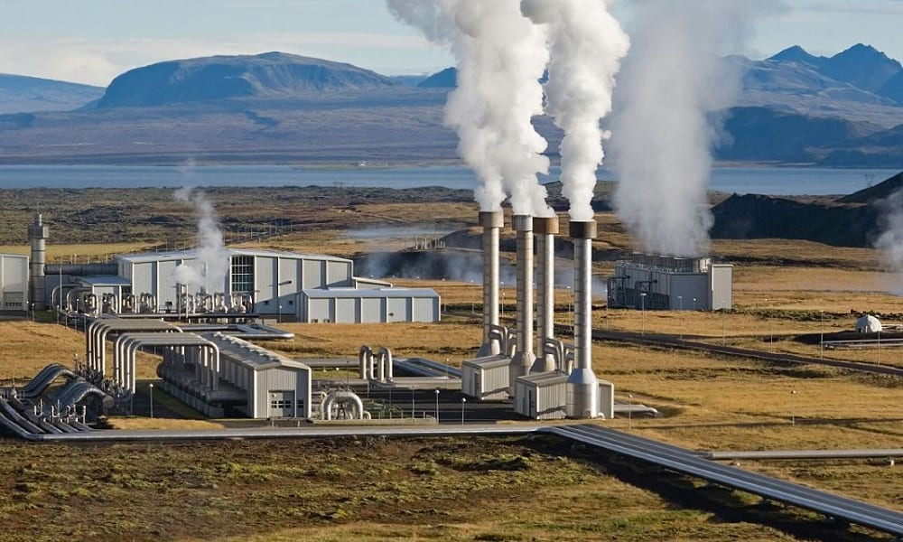

As fontes renováveis de energia utilizam-se de recursos não esgotáveis, tais como a radiação solar, os ventos, a energia hidráulica, a biomassa, o calor geotérmico e outros.Exemplos de fontes de energia renováveis são a luz do sol (energia solar), os ventos (energia eólica), a água (energia hídrica), as marés (energia maremotriz), as ondas do mar (energia ondomotriz), o calor da terra (energia geotérmica) e a biomassa como combustível.
Enquanto as fontes de energia renováveis são inesgotáveis, as fontes de energia não renováveis não se renovam, podendo acabar com o uso exagerado na produção de energia e combustíveis. Exemplos de fontes de energias não renováveis são fontes de energia derivadas de combustíveis fósseis, como o petróleo, o carvão mineral, o xisto e o gás natural.
VOCÊ SABIA? O xisto é uma camada de rocha sedimentar originada sob temperaturas e pressões elevadas, contendo matéria orgânica, disseminada em seu meio mineral. Ao aquecer essa rocha obtém-se um óleo, que em seguida é refinado. O óleo do xisto refinado é idêntico ao petróleo de poço, sendo um combustível muito valorizado. É possível produzir gasolina, gás combustível e enxofre através do óleo encontrado no xisto betuminoso. Estima-se que a quantidade desse óleo, que pode ser extraído através do xisto, é quatro vezes maior que as reservas de petróleo existentes.
No entanto, a exploração de xisto é cara, trabalhosa, extremamente poluente e de pouco retorno. Os impactos ambientais ocasionados pela exploração de xisto são: poluição hídrica, emissões gasosas de enxofre e alto risco de combustão espontânea dos resíduos remanescentes da rocha sedimentar.
Consiste no aproveitamento da radiação solar emitida sobre a Terra. Trata-se, portanto, de uma fonte de energia que, além de inesgotável, é altamente potente, pois uma grande quantidade de radiação é emitida sobre o planeta todos os dias. Na geração de energia solar fotovoltaica, placas fotovoltaicas convertem a radiação solar em energia elétrica.
Parque solar Horizonte, estado da Bahia.
Usina solar flutuante de Huainan, China.
Utiliza-se da força promovida pelos ventos para a produção de energia. Sua importância vem crescendo na atualidade, pois, assim como a energia solar, ela não emite poluentes na atmosfera. As usinas eólicas utilizam-se de grandes cataventos instalados em áreas onde a movimentação das massas de ar é intensa e constante na maior parte do ano. Os ventos giram as hélices, que, por sua vez, movem as turbinas, acionando os geradores.
Parque eólico Delfina, Bahia.
A energia hidroelétrica utiliza-se do movimento das águas dos rios para a produção de eletricidade. Em países como Brasil, Rússia, China e Estados Unidos, ela é bastante aproveitada pelas usinas que transformam a energia hidráulica e cinética em eletricidade.
Usina hidroelétrica de Itaipu, estado do Paraná
Por um lado, as hidroelétricas trazem vários prejuízos ambientais, não só pela inundação de áreas naturais e desvio de leitos de rios, como também pelo dióxido de carbono emitido pela decomposição da matéria orgânica que se forma nas áreas alagadas. Por outro lado, essa é considerada uma eficiente forma de geração de eletricidade, além de ser menos poluente, por exemplo, que as termoelétricas movidas a combustíveis fósseis.
A energia geotérmica é um tipo de energia renovável obtida a partir do calor proveniente do interior da Terra. Basicamente, as usinas geotérmicas injetam água no subsolo por meio de dutos especificamente elaborados para esse fim. Essa água evapora e é conduzida pelos mesmos tubos até as turbinas, que se movimentam e acionam o gerador de eletricidade. Para o reaproveitamento da água, o vapor é novamente transportado para áreas em que retorna à sua forma líquida, reiniciando o processo.
Usina geotérmica Hellisheidi, Islândia.
O principal problema da energia geotérmica é o seu impacto ambiental através de eventuais emissões de poluentes, além da poluição química dos solos em alguns casos. Somam-se a isso os elevados custos de implantação e manutenção.
Gerada por meio da movimentação das ondas, a energia ondomotriz ou energia das ondas é uma fonte de energia alternativa, limpa e renovável para a geração de energia elétrica, mas que ainda é pouco explorada no mundo.

Usina ondomotriz Pecém, Ceará.
Saiba mais sobre energias renováveis e não renováveis em: https://www.portalsolar.com.br/fontes-de-energia-renovaveis.html